TITANIC, DATOS TRAS EL DESASTRE
El objetivo de este análisis es presentar información sobre la tragedia del Titanic por medio de datos, aplicando conceptos vistos durante el bootcamp de Upgrade-Hub
Presentación de los datos en bruto
- Formato: CSV
- URL de Origen www.kaggle.com
- Archivos: Train data + test data (csv) + lifeboats
- Lifeboats: Datos sobre los botes salvavidas
- Nombre: Demetrio Esteban Alférez
- Compañía: Upgrade-Hub
- Email: demetrio.esteban@bootcamp-upgrade.com
- Fecha del último cambio: 20 de Junio
Accidente:
Pasajeros
Fallecidos
Clases de pasaje a bordo
Títulos de agrupación segmentados
Tripulación
La tripulación del titanic podemos dividirla en Jóvenes, Nobleza, Sacerdotes, Militares, Solteros y Casados
Jóvenes
67 Jóvenes subieron a bordo, teniendo el mas Jóven de ellos 3 meses de edad, el mayor 14 años
Adultos comunes
955 Adultos se subieron a bordo del Titanic, formados de grupos solteros y casados, ampliaremos mas adelante
Edad encapsulada en tramos de 10 años mediante el título asignado
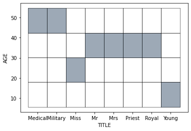En esta gráfica, se muestra los rangos de edad, en casillas de diez en diez teniendo en cuenta el título en el que fueron agrupados
Clase de viajero comparado con su título y el precio que pagaron por billete
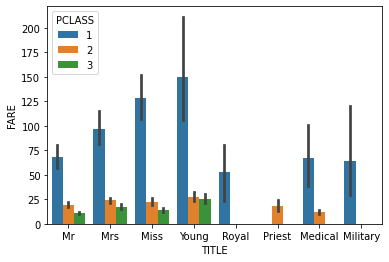Aqui podemos ver las relaciones entre el título, tipo de billete( primera, segunda o tercera clase) y el precio del mismo
Supervivencia general
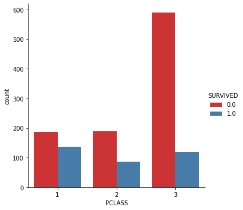
Los valores que se quieren representar con el cero y el uno son : "Cero" = Fallecido, "Uno" = Sobrevivió.
Podemos comprobar como el tipo de ticket influye en la Supervivencia del viaje.
Supervivencia general por sexos y clases
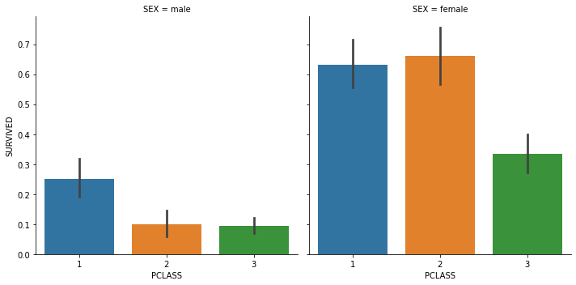
Segmentamos por sexo para comprobar la relación entre el título y la supervivencia.
Podemos ver como las mujeres tienen mas altos índices de supervivencia que los hombres.
Se cumplió la premisa : "Las mujeres y los niños primero"
Supervivencia general porcentuada
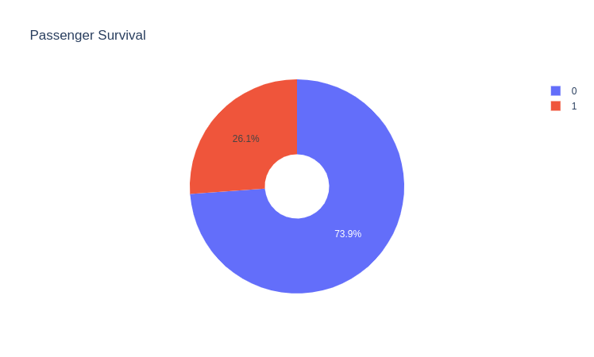El porcentaje de supervivencia en este accidente fue escaso, solamente un 26.1% de los tripulantes conseguió sobrevivir.
Datos sobre cada clase de viajero ( primera, segunda y tercera clase)
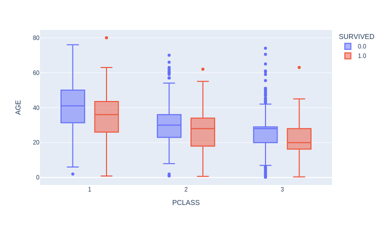
En esta gráfica podemos ver datos completos sobre cada clase , desglosados a su vez entre
supervivientes o fallecidos
PRIMERA CLASE
Fallecidos :
EL más jóven tenía 2 años, el mas adulto 76 estando la media en 41 años
Supervivientes:
EL más jóven tenía 7 meses, el mas adulto 80 estando la media en 36 años
SEGUNDA CLASE
Fallecidos :
EL más jóven 10 meses, el mas adulto 70 estando la media en 30 años
Supervivientes:
EL más jóven tenía 7 meses, el mas adulto 62 estando la media en 28 años
TERCERA CLASE
Fallecidos :
EL más jóven tenía 2 años, el mas adulto 74 estando la media en 28 años
Supervivientes:
EL más jóven tenía 2 meses, el mas adulto 63 estando la media en 20 años
Datos sobre cada clase de viajero teniendo en cuenta el titulo de agrupación y la edad
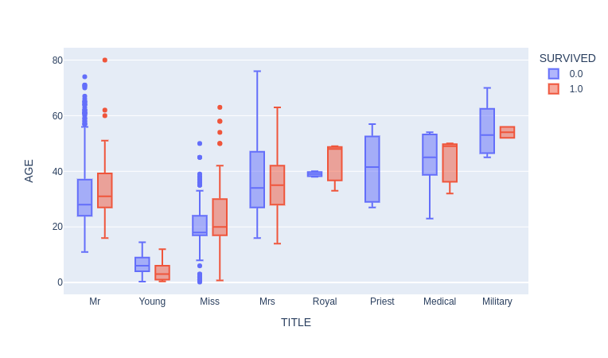
En esta gráfica podemos ver datos completos sobre cada clase , desglosados a su vez entre
supervivientes o fallecidos
MR
Fallecidos :
EL más jóven tenía 11 años, el mas adulto 74 estando la media en 37 años
Supervivientes:
EL más jóven tenía 16 meses, el mas adulto 80 estando la media en 31 años
YOUNG
Fallecidos :
EL más jóven tenía 6 años, el mas adulto 14 estando la media en 5 años
Supervivientes:
EL más jóven tenía 5 meses, el mas adulto 12 estando la media en 3 años
MEDICAL
Fallecidos :
EL más jóven tenía 23 años, el mas adulto 54 estando la media en 45 años
Supervivientes:
EL más jóven tenía 32 años, el mas adulto 50 estando la media en 49 años
MISS
Fallecidos :
EL más jóven 1 año el mas adulto 63 estando la media en 20 años
Supervivientes:
EL más jóven tenía 1 año, el mas adulto 63 estando la media en 30 años
MRS
Fallecidos :
EL más jóven 16 años , el mas adulto 76 estando la media en 34 años
Supervivientes:
EL más jóven tenía 14 años, el mas adulto 63 estando la media en 35 años
MILITAR
Fallecidos :
EL más jóven 45 años, el mas adulto 70 estando la media en 53 años
Supervivientes:
EL más jóven tenía 52 años, el mas adulto 56 estando la media en 54 años
ROYAL
Fallecidos :
EL más jóven tenía 38 años, el mas adulto 40 estando la media en 39 años
Supervivientes:
EL más jóven tenía 33 años, el mas adulto 49 estando la media en 48 años
PRIEST
Fallecidos :
EL más jóven tenía 27 años, el mas adulto 57 estando la media en 51 años
Supervivientes:
No sobrevivió ningún clérigo
ÍNDICE DE SUPERVIVENCIA POR EDAD
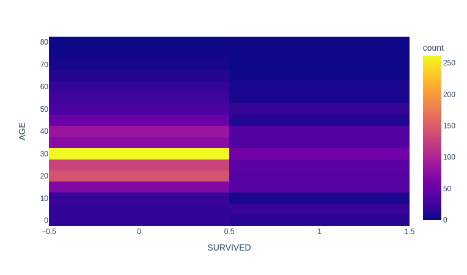
En esta gráfica contra menor sea la tasa de supervivencia, mas amarillo será el color, estando la
peor franja de embarque
en la franja de 27 a 32 años
NOMBRES MAS COMUNES ENCONTRADOS
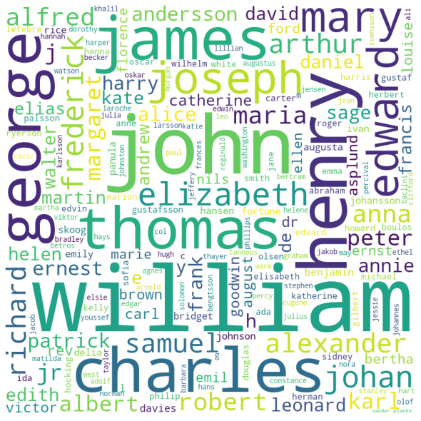Los nombres mas comunes que podemos encontrar entre los tripulantes en forma de nube
LANZAMIENTO DE BOTES SALVAVIDAS, SEGÚN CAPACIDAD Y HORA
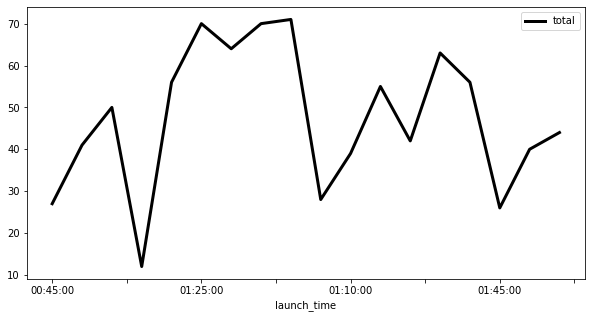
Observamos una distribución de los lanzamientos de los botes salvavidas de forma caótica,
no
ocupando plazas
que hubiesen permitido salvar muchas mas personas.
NÚMERO DE PERSONAS POR BOTE VS LA CAPACIDAD DEL MISMO Y LOS TRIPULANTES
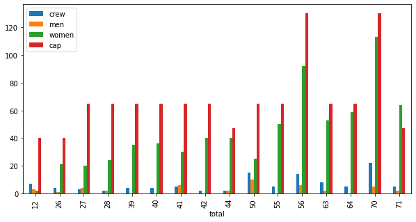
Es curioso ver como los marineros se distribuyen en los botes, dando prioridad a los niños y
mujeres, pero no esperando a completar la capacidad del bote.
LANZAMIENTO COMPARANDO LA CAPACIDAD Y MIDIENDO EL TIEMPO

Se puede observar como los primeros botes fueron saliento con mayor capacidad , según avanzaba el
hundimiento cundía mas el caos.
Los datos en la Historia, conclusiones y curiosidades
CÓDIGO
VER CÓDIGO COMENTADO Y LOS PASOS SEGUIDOS
Secuencia del video
Mejoras a futuro
Se necesita mejorar el dataframe uniendo y constrastando los botes salvavidas
hacer una categoría familia y agrupar entre hombres y mujeres no solteros, para distribuirlos entre los niños
Calcular la tripulación en base a los muertos que no encajan en categoría
Calcular que lado del barco era mas seguro para obtener un bote y salvarse
Se podrían incluir datos del accidente tales como trayectoria, velocidad ect